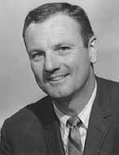

This little memoir is based purely on my memory of events that took place a quarter-century ago. That place and time was, for me and for the other participants, a very stressful environment. We had been handed an impossible mission, were given no help by top management and were met by the operating divisions with reactions ranging from amused indifference (Bull) to open hostility (Dick Douglas tried seriously to have me fired after I ran an IPR on his pet, the new 6000, and recommended postponing announcement). Perhaps in reacting to the stress I retained little or no documentation on my PMO experience and have not written about it much. Still it is interesting to reflect particularly on the personalities involved and on the business problems we faced.
The history of Multics from the point of the Palyn Report played out against a background of upheaval and reorganization at the top level of Honeywell management.


Dick Hill, 1976
To summarize briefly, at the time of the GE Computer Division acquisition, Honeywell Information Systems was a nearly autonomous unit run by Clarence W. (Clancy) Spangle. It was, in effect, a continuation of the original Datamatic Corporation, which had been formed originally as a joint venture between Honeywell and Raytheon. Raytheon withdrew in the mid-1960's.
HIS was headquartered in Waltham, Massachusetts, and had factories and research and development facilities in several locations in the Boston area. The remainder of Honeywell, which constituted about two-thirds of the total revenue base, was headquartered in Minneapolis, where it had been founded in 1898. Honeywell's core business, industrial and home control systems, avionics, military hardware and the like, had little in common with HIS products. At the time of the merger, the chairman and CEO was Jim Binger, a legendary salesman. Binger was married to the daughter of a founder of 3M Corporation, and both he and she were enormously wealthy.
Binger retired in 1973, in accord with Honeywell custom that the CEO retire at age 60. His successor was Steve Keating, another old-line Honeywell salesman, who was given the CEO post as a reward for long and faithful service, despite the fact that he was 58 at the time of his accession to the post. Keating was essentially a place-holder; neither bright nor savvy, he represented stability while a new generation of Honeywell management was waiting in the wings.
In 1975 that new generation locked horns in a classic political battle which was won by Edson Spencer over Clancy Spangle. Spencer had the support of Honeywell old-timers, primarily because he had come through the chairs in the classic mode, with service in several divisions, and at least one major overseas posting: Spencer had spent several years with Yamatake- Honeywell, the company's Japanese affiliate.
Spencer's major drawback was that he was nearly totally ignorant of the computer business, and was very much aware of this deficiency. Determined that one-third of the company he ran would not get away from him, he succeeded in convincing the Board that HIS headquarters should be relocated to Minneapolis so that some degree of integration and synergy could develop between Controls and IS. Spangle, who was very comfortable in his home at Manchester-by-the-Sea, resisted, but could not prevail. In mid-1976 he made the move with a minimal staff drawn from Waltham.
Spencer threw another curve at Spangle. He had been impressed by a management theory known as "Matrix Management," which in essence argued in favor of a headquarters group cutting across product lines, but not endowed with operating authority, that would independently assess product lines and advise top management on the conduct of the business. Spangle was directed to form such a group in Minneapolis. He picked Norm Feldman, then head of LISD in Phoenix, to direct the Program Management Operation (PMO). Feldman's organization included four vice presidents: one each for large, medium and small systems (all of them taken from marketing) and Al Conover, vice president for systems, whose bailiwick included strategic planning, research and development, competitive analysis, etc. I moved from my position as Multics Program Manager in Phoenix to become Director of Research and Development, reporting to Conover in Minneapolis.
Norm Feldman, it turned out, was suffering from blocked arteries, and in addition his wife was homesick for Phoenix. He left within a year, to return to Phoenix to undergo heart surgery, and subsequently to leave the company. He was replaced by Dick Weber, a marketing VP from Waltham. At LISD Feldman had been replaced by Dick Douglas, who had been in charge of HIS marketing in the US. Weber had worked for Douglas, but they were not friends. In fact, Douglas had few friends - he was abrasive, abusive and rude. He was also goal-oriented, shrewd and ruthless.
Conover's Director of Strategic Planning was Bob Forzani, who had been assigned from Honeywell Bull, where he had been a marketing executive. Forzani's challenge was to create an overall strategic plan for HIS covering all product lines. Honeywell Bull recalled Forzani in 1978 and I inherited his job fairly soon after the Palyn Report was issued.
Multics was always a major strategic issue for HIS. Its major strengths, strategically, were that it was a highly prestigious line, it was an entrée into the academic world and into major components of the federal government, it was relatively low cost in terms of software R&D, and it lent itself to target marketing. On the other hand, it was a bad fit with HIS' core business, which was data processing as it was then understood. Further, to be a truly cost-effective system Multics was in dire need of a significant hardware upgrade, and finally, the specter of distributed processing was looming on the horizon. This was becoming apparent as early as 1977, when we began examining threats to Billerica's minicomputer business.
The Palyn Report recommendation to make Multics the core business of HIS fell on deaf ears in Minneapolis. There was simply no way that was going to happen, ever. Douglas had embarked on a major hardware upgrade to the 6000 line, US Marketing did not understand Multics, and did not like what they did know. The exception was Federal Systems, under Jim Renier, where Multics was marketed fairly aggressively.
The two years from 1978 to 1980 were turbulent. Spangle was increasingly restive in Minneapolis. He did not like the management arrangement that subordinated him to Spencer, he did not like living in Minneapolis, and as HIS lagged in the marketplace he did not come up with the solutions that management wanted. In 1979, fed up, he left to become CEO of Memorex in San Jose, California. Al Conover followed him there, leaving PMO pretty much in turmoil, but not for long. Spangle was replaced by Steve Jerritts, an IBM manufacturing executive who had been hired by Honeywell Bull to run their peripherals factory in Belfort, near Nancy in eastern France. Jerritts was a strange choice and a strange man. He kept HIS in a state of suspended animation for the two years of his tenure. PMO was eliminated, in essence, and the organization returned to its previous state of separate fiefdoms. I stayed on in Minneapolis, reporting directly to Jerritts as the executive responsible for running all IPRs throughout the company.
Finally, in 1981 (if memory serves) Jerritts was mercifully ousted and replaced by Jim Renier. Tough, pragmatic and entrenched in HIS, Renier had no product ax to grind. He brought in some of his people from Federal Systems, and hired some people from outside, including Tom Byrne, who had been a founder of a communications computer company that had been absorbed by Northern Telecom. Byrne was, in effect, the replacement for Conover, and I wound up working for him, with the assignment of developing a new strategic plan for HIS.
At that time this was a near-impossible task. HIS was lagging seriously in both hardware and software. We had no entry in the PC market, we had no chip development capability, we had no peripherals capability except in terminals, and even there Billerica (which had that assignment) was lagging badly. We had no data base software, and our product lines were not integrated in any meaningful way.
The plan we finally came up with called for a total reorientation of the company. It was based on an attempt to draw from the overall strength of Honeywell in industrial controls with a major thrust in computer-based manufacturing control systems; another major thrust in communications; and a third major thrust in applications development designed to create new applications-based businesses (one such was in education, thanks to efforts on-going in Toronto).
That left the issue of what to do with Multics. There seemed to be three basic alternatives available (recalling that the alternative presented by the Palyn Report had been rejected): 1) Treat Multics as a separate business, 2) Spin Multics off or deal it off to a third party, possibly to Bull, or 3) Kill the program. We discreetly investigated the second alternative, but found no interest outside, and Bull was in no position at that time to make a commitment to Multics. There was no advantage, strategic or material, to killing the program, and besides Renier liked Multics. That left the first alternative, which was the recommendation. The presumption was that Multics would be an end-game product, capable of sustaining itself, but not capable of generating sufficient revenue to fund major upgrades.
Renier bought most of the plan, and set about creating an organization to implement it. At the same time, however, other forces were at work. The top echelon of Honeywell lost confidence in the ability of the company to fund all of the development that the new plan called for, and Bull came under increasing pressure from the French government to become independent. Ed Spencer retired in 1982 (?), and Renier took his place. By this time I had joined Corporate Research to become involved with MCC. Jerry Meyer, who had in effect replaced Dick Weber, was named to head up HIS, and lead it into a transition state in which it would become a part of Bull.
By 1985 the Bull influence was paramount, and the transition was completed before the end of the decade. Honeywell was no longer in the computer business.